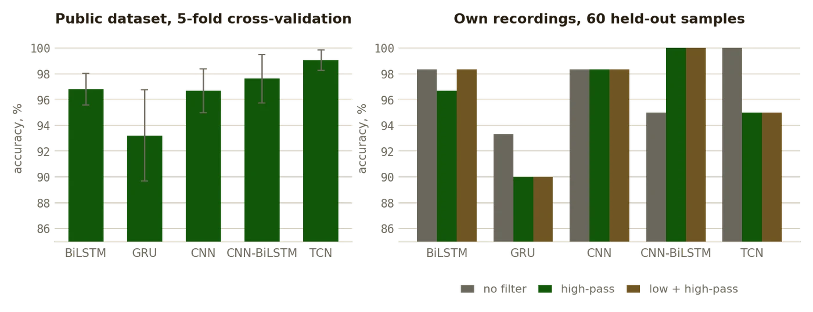
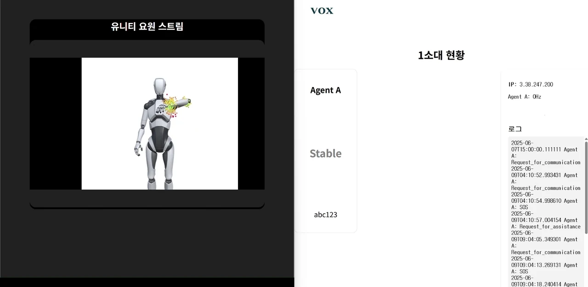
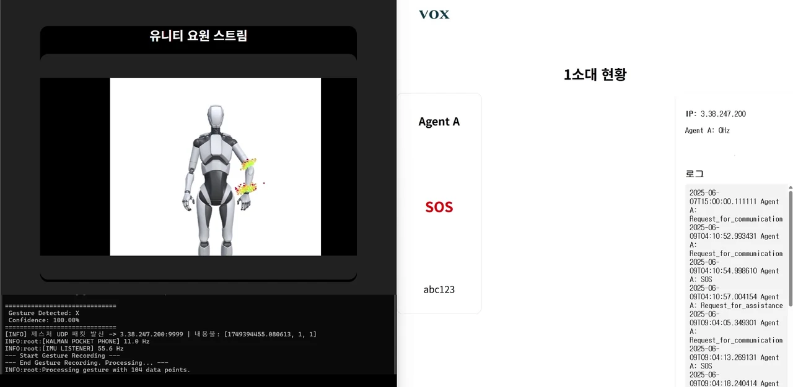
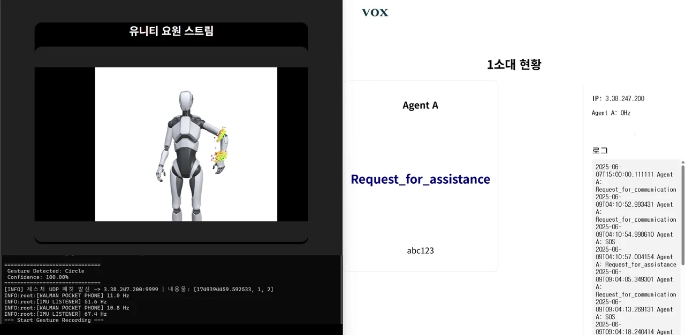

Development · 2025
VOX
Hand signals from a smartwatch to a command post, built for firefighting and policing.
AIAppIMUPython · C#

What it does
- Reads a hand signal from a smartwatch and sends it to a command post. Radios in firefighting and policing are half duplex, so one person speaks at a time, and operating one at all is hard in the middle of an emergency.
- The arm pose is estimated continuously from the watch and drawn in Unity; a gesture is recorded on a key press, classified, and sent over UDP to a server whose squad page shows each agent's state.
- Three signals: V for a request for communication, X for SOS, and a circle for a request for assistance.
Results
- Five architectures, BiLSTM, GRU, CNN, CNN-BiLSTM and TCN, trained on two sources: the public 6DMG dataset under five-fold cross-validation and the project's own recordings under three filter settings.
- On 6DMG, TCN reaches 99.05% and CNN-BiLSTM 97.62%. On the 60 held-out samples of the project's own recordings, CNN-BiLSTM with a high-pass filter reaches 100%, and that is the deployed model.
- Built on the wear_mocap stack for the arm pose. Team of three; the machine learning, the Python pipeline and the repository are the author's part.
Facts
- Year
- 2025
- Status
- Public
- Stack
- Python, PyTorch; Unity, C#; a web server for the squad page
- Context
- Undergraduate capstone project, Myongji University
Figures


